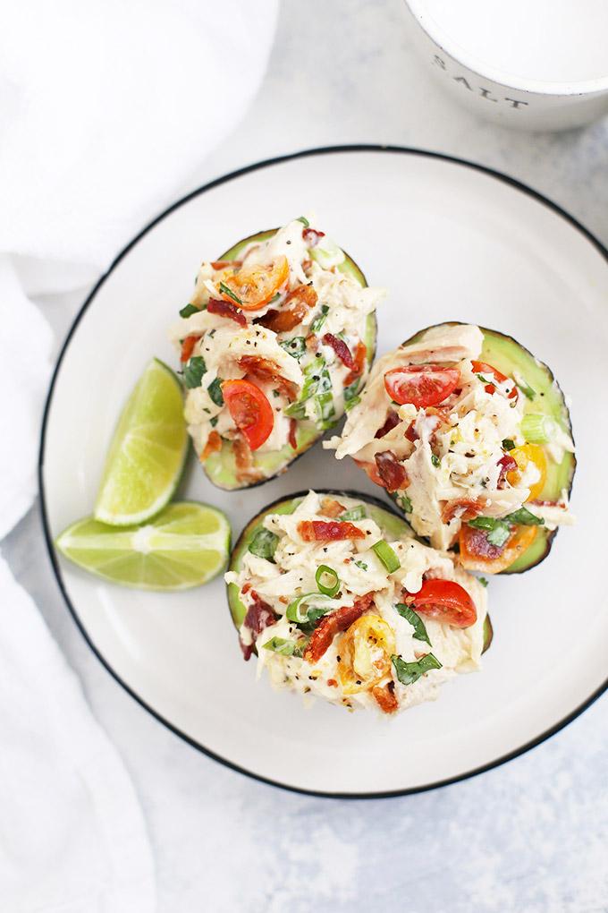

Mexi-Chicken Avocado Cups

Description
This healthy chicken salad recipe is lightened up using Greek yogurt instead of mayonnaise. So creamy, flavorful, and easy to make. A simple chicken salad recipe that can be used top over salads, made into a sandwich and stuffed in avocados.
Ingredients
- Chicken - Use RoChicken – Use Rotisserie Chicken and shred or make your own shredded chicken.
- Avocado – Grab a couple of avocados to stuff with the chicken salad.
- Greek Yogurt – Needed in place of mayonnaise for that creamy goodness
- Onions - Adds a boost of flavor
- Herbs and Condiments – For additional flavor